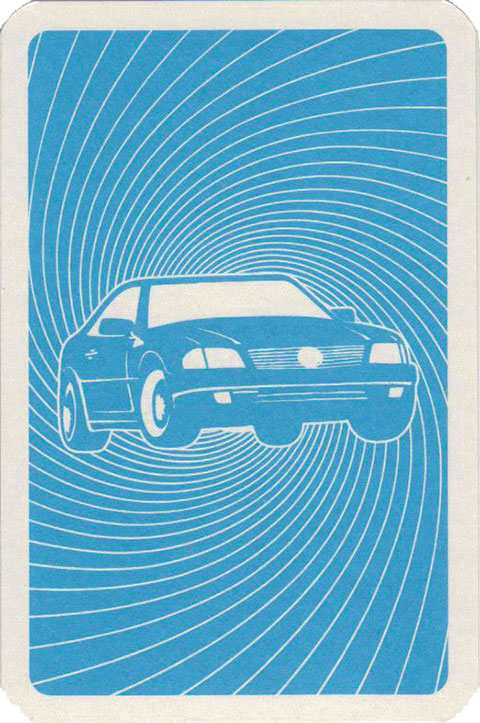

<nb-card style="display: flex; flex-direction: row">
  <span style="margin-top: 20px; margin-right: 5px">
    <a routerLink="/"
      ></a>
  </span>
  <nb-menu [items]="items" routerLinkActive="active"> </nb-menu>
</nb-card>
